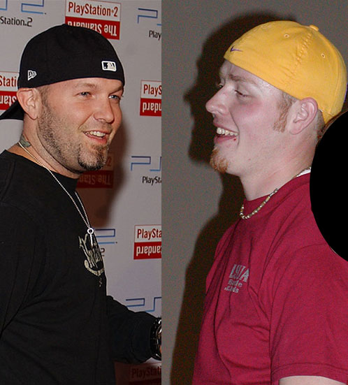
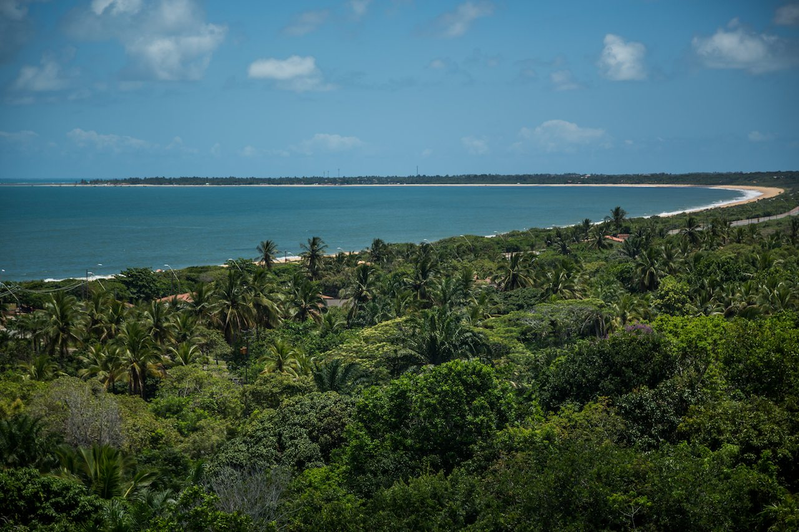
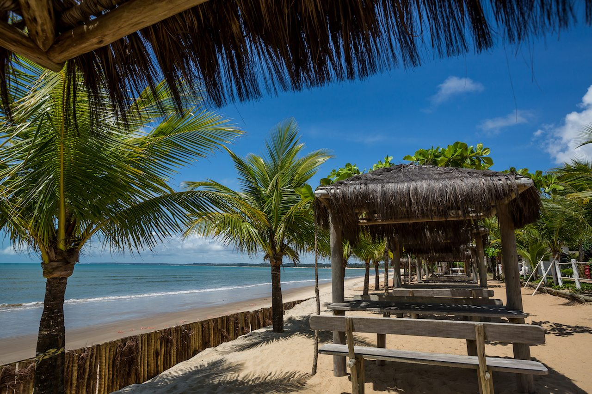
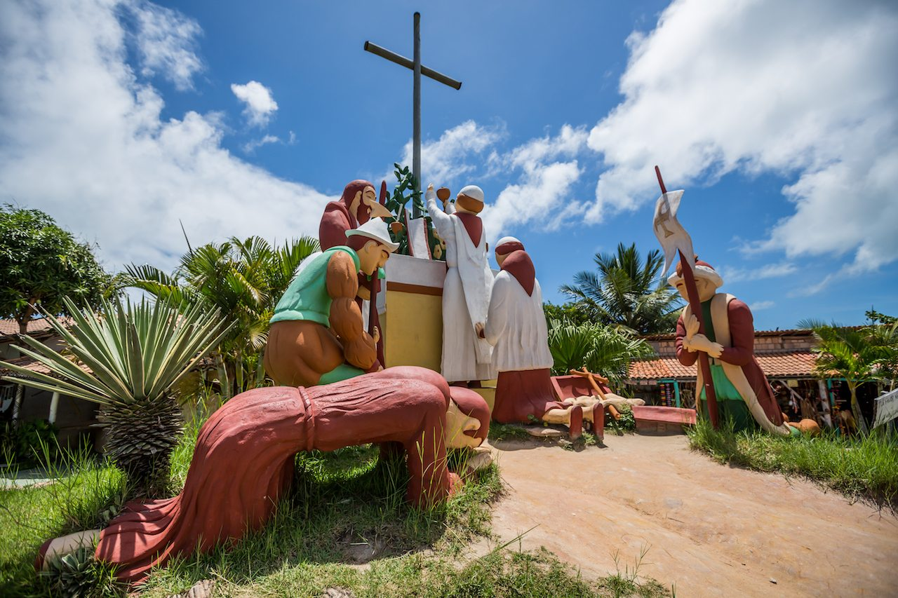
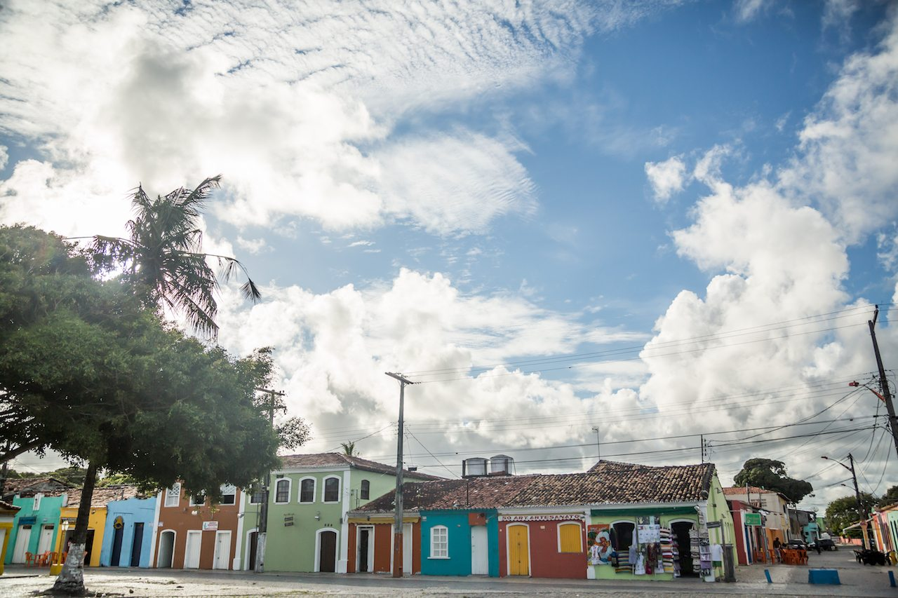

Porto Seguro is the best beach town in the whole world. Here is why.
Porto Seguro: My favorite beach in the world
As a ginger kid, beaches and I don’t usually get along so well. I rarely find that the exposure to so much direct sunlight is worth the payoff of the activities which come along with being at the beach. Despite its proximity to the Equator, Porto Seguro in the state of Bahia in Brazil is somehow the perfect beach setup for a ginger like me.
There are ample shaded sitting areas directly on the beach and lots of historic sites and tours to occupy yourself with during the peak sun hours.
After spending a week in the mountain town of Diamantina for Carnival, visiting the beach scene of Porto Seguro was quite the change of pace. This week at the beach was full diving, flying, learning, dancing, and the makings of an identity story which has been one of my best accounts to-date!
This post was written with support from Embratur, which is part of the Brazilian Ministry of Tourism and which operates VisitBrasil.com. They have supplied me with images and marketing support. All views expressed are solely my own and based on my personal experiences and independent research.
In A Nutshell
Highlights - Pristine beach, warm water, well-defined local food culture, lots of activities, non-touristic feel, very affordable.
Lowlights - You will need cash to pay for most activities in Porto Seguro and all the banks are concentrated away from many of the most interesting sites.
Bottom line - Porto Seguro is perhaps the very best beach I have ever visited and had a perfect combination of activity, relaxation, history, and modernity.
Celebrity encounters in Porto Seguro
 Fred Durst or Judson Moore?
My friends and I went by bus to Porto Seguro for spring break. The bus journey from Belo Horizonte, where I was based out of for 6-weeks, was a tiresome overnight ride. The bus was very luxurious and comfortable, but it was a long way to go, lasting around 15 hours.
In the middle of the night, we took a small break at a roadside rest area. Brazilian interstates rest areas are very built up, with restaurants and any accommodation you might need on a long-haul.
We were a bit hungry, so we go to the buffet to order something. The women taking my order was really shy about it for some reason, and I could see over her shoulder that two of her colleagues were pointing and giggling at me. As an obvious foreigner, I am used to this sort of thing, but this was somehow different.
I got my food and went back to the bus. After eating, I started to drift back to sleep and as my head nodded down I caught a glimpse of something. It was the shirt I was wearing. It was a Limp Bizkit t-shirt. And at that moment, I was also wearing a red NY Yankees baseball hat, backward, just like what Fred Durst was known for wearing. Not only was it the same sort of hat, it was THE EXACT same hat because I caught it in a crowd the year before when I saw Limp Bizkit live in Germany!
All of a sudden, the behavior at the rest stop made sense. They thought that I was Fred Durst, the singer of Limp Bizkit!
This was quite an exciting revelation. So for the week in Porto Seguro, my friends spread rumors that Fred Durst was there somewhere and would ask other people if they had seen him. This rumor spread very quickly and I was quickly surrounded by fans asking for autographs! It was pretty awesome.
To give you a little more of a personal look at all the activities I got in to in Porto Seguro, here is a video. It is a bit long, so feel free to jump around the video and find the areas that interest you the most.
The Discovery Coast
Porto Seguro is located along what is known as the Discovery Coast. Called this because it is where the Portuguese first arrived in Brazil in 1500. This is where Portuguese colonialism began in Brazil, making it the most historically significant place in the entire country.
It is also among the most beautiful places in the country. The beaches feel untouched. There are no major cities for hundreds of miles, no (noticeable) pollution, and everything is left in a very natural state.
 Porto Seguro, Bahia, Brazil, Beach Panoramic. Courtesy Embratur Image Bank.
The entire coastline is lined with beach huts which play music the whole day and night. There is no lack of facility to relax, a place to sit or layout, or servers to bring you a fresh-cut coconut, pineapple, or a refreshing caipirinha. The beach life in Porto Seguro is both relaxed and energetic at the same time. You will feel the joy, the fun, and the warmth of the Brazilian spirit while being completely relaxed.
 Porto Seguro, Bahia, Brazil, Ponta Grande Beach. Courtesy Embratur Image Bank.
Axé: The Music of Bahia. The Music of Brazil.
Brazil is known for Samba, but in the northern beach territories from Porto Seguro to Salvador, Axé is the music of the land. The music is very rhythmic and inspires a dance, even from the shyest people. Press play below to give it a listen. Let it play out as you read the rest of this post, and feel yourself in the culture of Bahia!
Religious symbols of Porto Seguro
As Porto Seguro is the landing site of Portuguese settlers, it also has a large number of churches and many of the oldest buildings in Brazil. The town is scattered with crosses, statues of pilgrims, and other Christian symbols. There are also quite a number of churches.
The Nossa Senhora da Pena Church houses many religious paintings from the sixteenth and seventeenth centuries. The Church of Our Lady of Mercy features images from the stations of the cross. And the Church of St. Benedict, which was built by the Jesuits and is the site of the first Jesuit school in Brazil.
Though not exactly a religious symbol, you must also visit the Discovery Landmark (Marco do Descobrimento) which celebrates the original landing spot of Portuguese settlers to Brazil. It is the Brazilian equivalent to Plymouth Rock in the USA.
 Porto Seguro, Bahia, Brazil, Religious Sculpture. Courtesy Embratur Image Bank.
What to do in Porto Seguro
Aside from taking in the beach scene and visiting the historic landmarks, there are a lot of shops selling handicrafts and other local fare. There are also a number of open-air nightclubs. I visited during a busy spring break week and apparently, Porto Seguro is a very popular destination for Argentinians on spring break.
Though Porto Seguro had a lot of tourists at this time, the numerous nightclubs had a rotating schedule, meaning that on a given night, only one or two clubs would be open. Then on the next night, one or two different clubs would be open. This allowed for each club to have a really busy night and was fun as a tourist, but it also meant that there was lacking freedom of choice about where to go in the evenings. I am ok with that though, as it was still all super fun!
Scuba diving in Porto Seguro is a highlight of my entire life’s memories. The waters a warm, clear, and full of beautiful exotic fish and reefs. I have been scuba diving a few times now, but Porto Seguro was my first time. We went out to a major living reef and dove for half an hour with huge angelfish and other colorful ocean creatures. Luckily: no sharks. I think I would have lost my mind if I had seen even a small shark, but that is just me!
There are other watercraft activities like the banana ride and parasailing, which I also did. All of this is easily accessible from any beach in Porto Seguro and is quite affordable, so I highly recommend that you do it too!
 Porto Seguro, Bahia, Brazil, Historic Center Clouds. Courtesy Embratur Image Bank.
Where to get more information about Porto Seguro
For more information about visiting Porto Seguro, check out this page on VisitBrasil.com!
I would love to hear about your time in Porto Seguro, or how you think this compares to other beach destinations. Please leave a comment below, or, you may reach out to me directly on Twitter at @judsonlmoore.